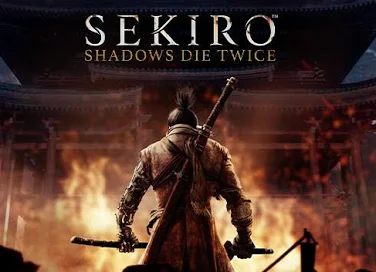

Sekiro: Shadows Die Twice es un videojuego de acción y aventura desarrollado por FromSoftware y publicado por Activision.
Ambientado en un Japón del siglo XVI, combina una jugabilidad desafiante con una profunda historia de redención.
El jugador asume el papel de un shinobi conocido como “El Lobo”, que busca rescatar a su maestro y vengarse de sus enemigos.
Destaca por su sistema de combate basado en la postura y por la ausencia de niveles o mejoras tradicionales, lo que lo convierte en una experiencia intensa y estratégica.
Ganó el premio a Juego del Año 2019 en The Game Awards, consolidándose como uno de los títulos más importantes de su generación.
